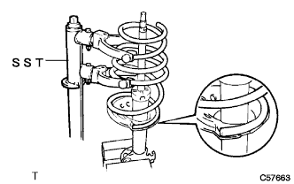
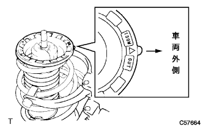
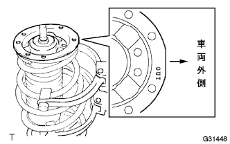
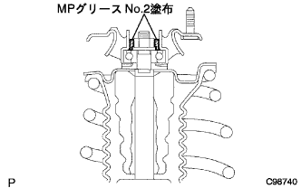

フロントショックアブソーバー W/コイルスプリング 組み付け |
| 1. フロントコイル スプリング LH取り付け |
SSTを使用して、コイルスプリングを圧縮する。
|  |
コイルスプリングエンドをアブソーバロワーシートの段差に合わせて取り付ける。
| 2. フロントスプリング バンパ LH取り付け |
| 3. フロントコイルスプリング インシュレータ UPR LH取り付け |
|  |
コイルスプリングインシユレータＵＰＲの”△”マークを車両外側にして、ショックアブソーバに取り付ける。
| 4. フロントコイルスプリング シート UPR LH取り付け |
|  |
コイルスプリングシートＵＰＲの”ＯＵＴ”マークを車両外側にして、ショックアブソーバに取り付ける。
| 5. フロントサスペンションサポート ダスト シール LH取り付け |
新品のダストシールを取り付ける。
| 6. フロントサスペンション サポートSUB-ASSY LH取り付け |
フロントサスペンションサポートをフロントショックアブソーバＡＳＳＹに取り付ける。
| 7. フロントサスペンション サポート トゥー フロントショックアブソーバ ナット LH取り付け |
新品のフロントサスペンションサポ－トツウフロントショックアブソーバナットを仮締めする。
SSTをフロントコイルスプリングから取りはずす。
フロントコイルスプリングシート ＵＰＲ ＬＨを固定し、新品のナットで締め付ける。
|  |
図の部分にＭＰグリースＮｏ．２を塗布して、フロントサスペンションサポートダストカバーを取り付ける。